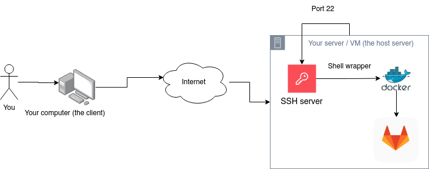

Forward SSH connections to GitLab running with Docker
In this tutorial I will explain how to redirect the git@ connections to your GitLab instance.
The network setup

Creating the git user on the host system
Ensure you have access to docker ps or add yourself to the docker group: sudo usermod -aG docker $USER && newgrp docker.
Then create the git user:
sudo useradd --uid $(docker exec gitlab id git -u) --gid $(docker exec gitlab id git -g) --home-dir /opt/gitlab/data --no-create-home git
Creating the scripts
Create the directory structure on the host system:
mkdir -p /opt/gitlab/embedded/service/gitlab-shell/bin
Create 3 scripts:
/opt/gitlab/embedded/service/gitlab-shell/bin/gitlab-shell:
This script wraps the GitLab shell access.
#!/usr/bin/env sh
set -eu
/opt/gitlab/embedded/service/gitlab-shell/bin/gitlab-shell-docker-exec gitlab-shell "$@"
/opt/gitlab/embedded/service/gitlab-shell/bin/gitlab-shell-authorized-keys-check:
This script manages asking to GitLab if a key is authorized to access the SSH server.
#!/usr/bin/env sh
set -eu
/opt/gitlab/embedded/service/gitlab-shell/bin/gitlab-shell-docker-exec gitlab-shell-authorized-keys-check "$@"
/opt/gitlab/embedded/service/gitlab-shell/bin/gitlab-shell-docker-exec:
This script does all the magic of communicating with the GitLab container.
#!/usr/bin/env bash
set -e
if [[ "$1" == "gitlab-shell-authorized-keys-check" ]]; then
SCRIPT="$1 git"
shift
elif [[ "$1" == "gitlab-shell" ]]; then
SCRIPT="$1"
shift
else
echo "'$1' unknown. Aborting."
exit 1
fi
exec docker exec -i \
--env SSH_CONNECTION="$SSH_CONNECTION" \
--env SSH_CLIENT="$SSH_CLIENT" \
--env SSH_TTY="$SSH_TTY" \
--env GIT_SSH="$GIT_SSH" \
--env SSH_ORIGINAL_COMMAND="$SSH_ORIGINAL_COMMAND" \
gitlab \
/opt/gitlab/embedded/service/gitlab-shell/bin/${SCRIPT} "$@"
- Ensure
gitlab-shellscript is owned bygit:sudo chown git:git /opt/gitlab/embedded/service/gitlab-shell/bin/gitlab-shell - Make all 3 scripts executable:
sudo chmod +x /opt/gitlab/embedded/service/gitlab-shell/bin/gitlab-shell /opt/gitlab/embedded/service/gitlab-shell/bin/gitlab-shell-authorized-keys-check /opt/gitlab/embedded/service/gitlab-shell/bin/gitlab-shell-docker-exec
Check the scripts
I created the following checks:
sudo -u git /opt/gitlab/embedded/service/gitlab-shell/bin/gitlab-shell-docker-exec gitlab-shell
# Only SSH allowed
and
sudo -u git /opt/gitlab/embedded/service/gitlab-shell/bin/gitlab-shell-docker-exec gitlab-shell-authorized-keys-check
# Insufficient arguments. 1. Usage
# gitlab-shell-authorized-keys-check <expected-username> <actual-username> <key>
Adjust the ssh server config
Finally in /etc/ssh/sshd_config you will need to add:
Match User git
PermitEmptyPasswords no
PasswordAuthentication no
AuthorizedKeysCommand /opt/gitlab/embedded/service/gitlab-shell/bin/gitlab-shell-authorized-keys-check %u %k
AuthorizedKeysCommandUser git
And then sudo service sshd restart
Testing the ssh connection
ssh git@instanceHostName
Example:
ssh git@10.10.10.1
PTY allocation request failed on channel 0
Welcome to GitLab, @williamdes!
Connection to 10.10.10.1 closed.
You can use ssh git@instanceHostName -vv to debug further.
Be sure to add your SSH public key on your GitLab profile (SSH keys).
You can check your agent has it loaded by using the command ssh-add -L.
Bonus: it will display the public key to add on your GitLab account.